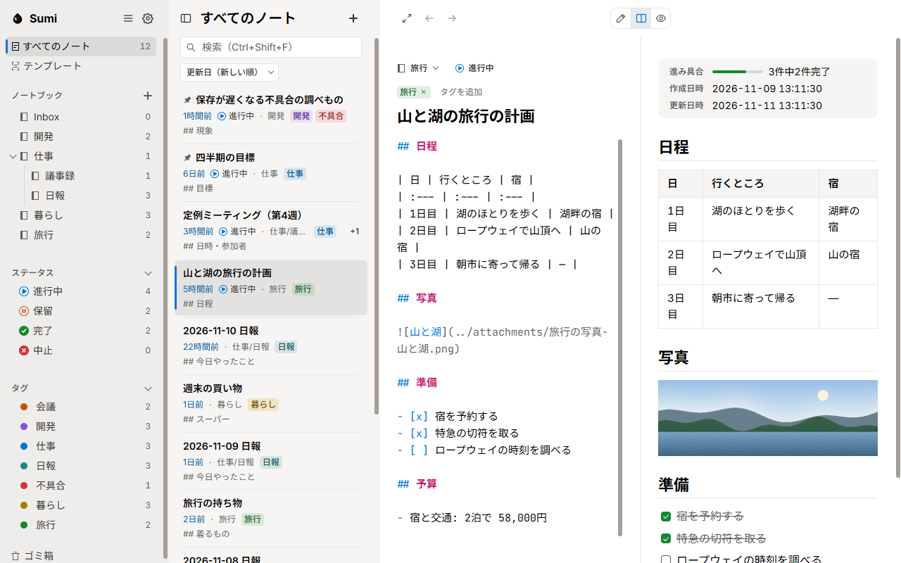
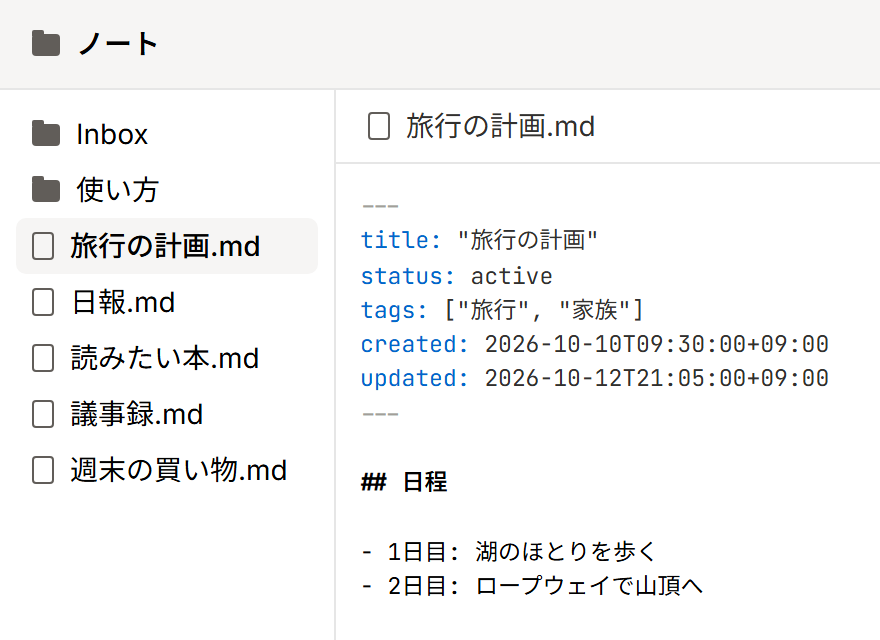
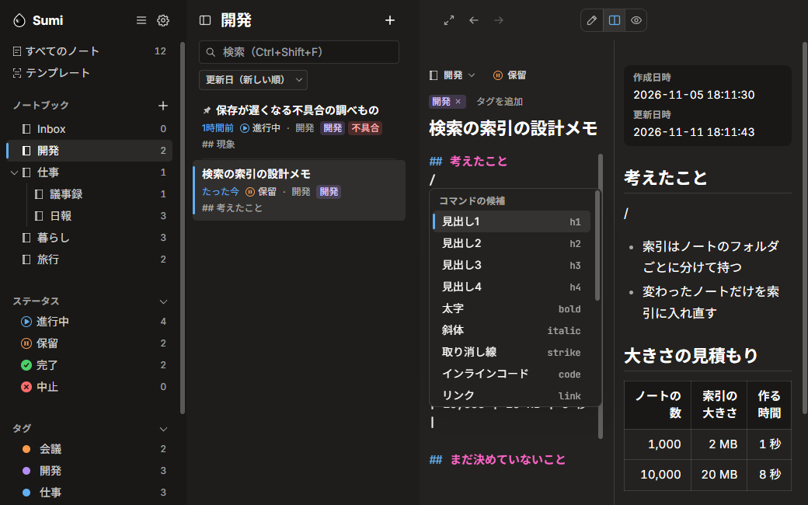
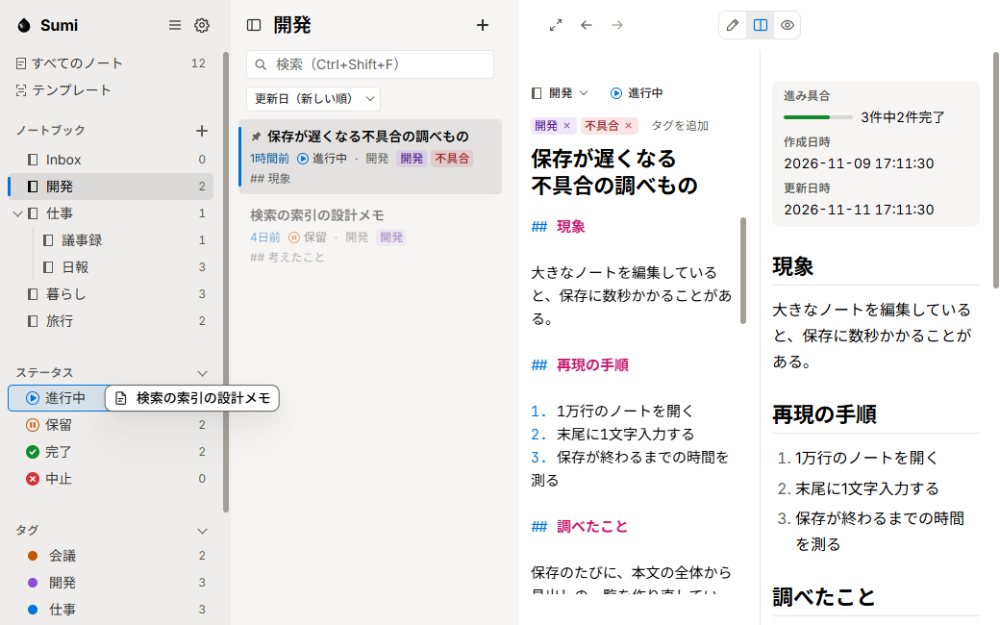
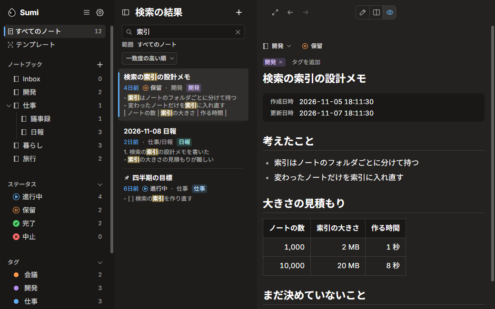
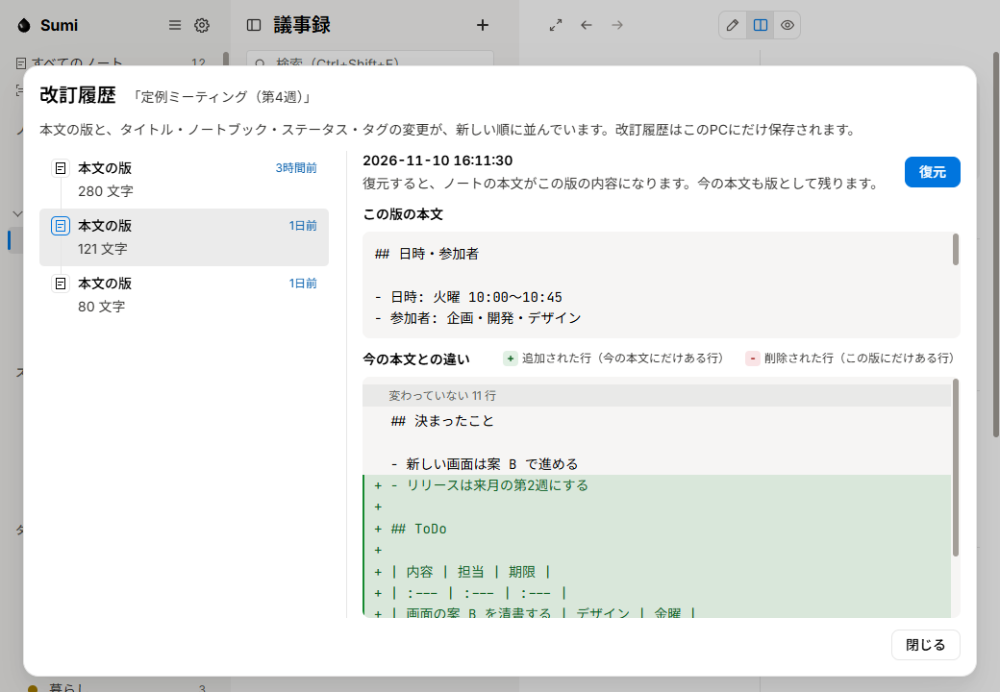
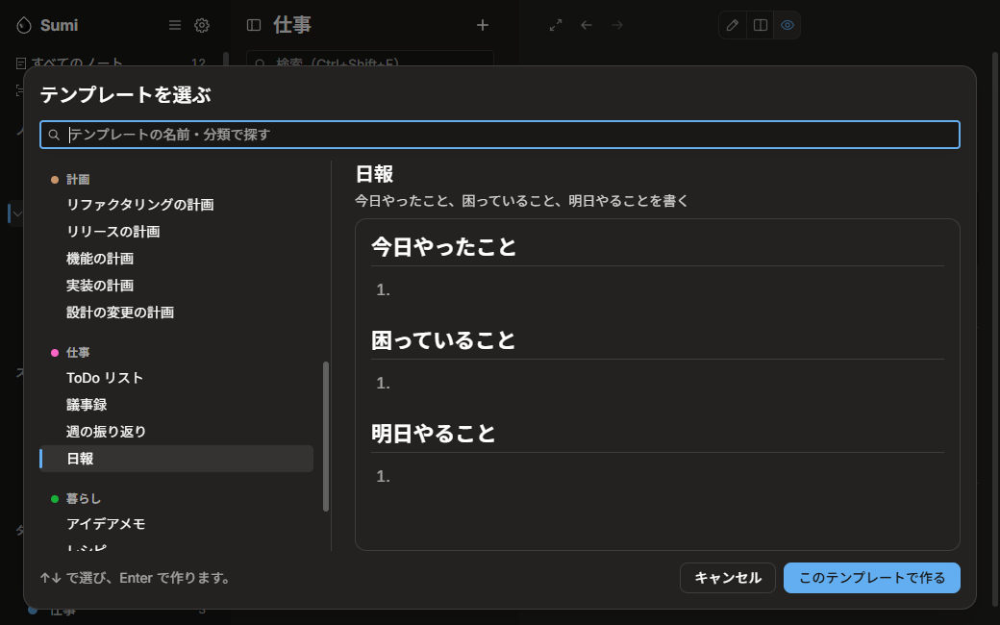
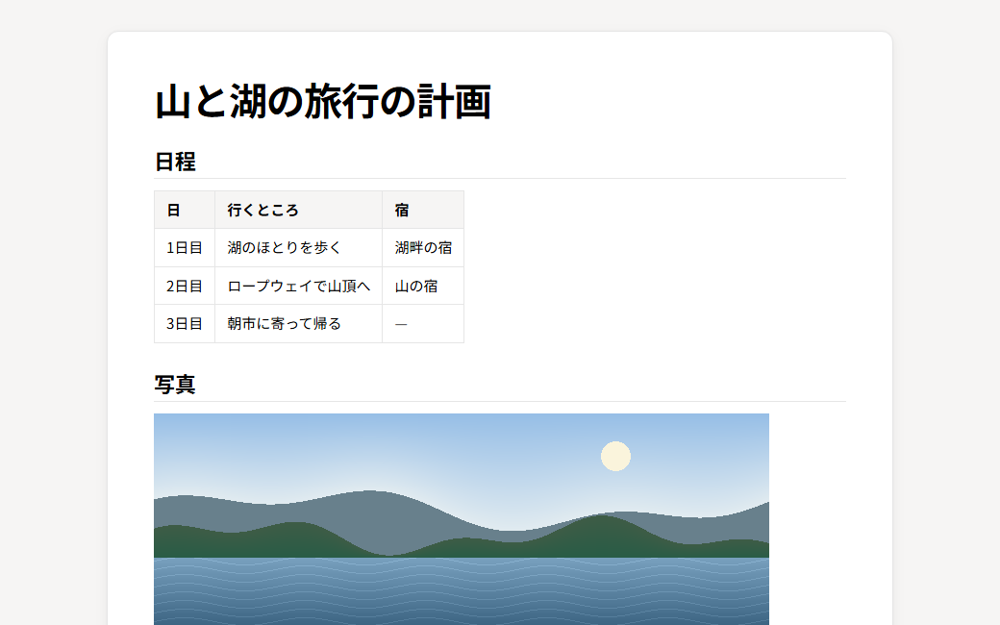
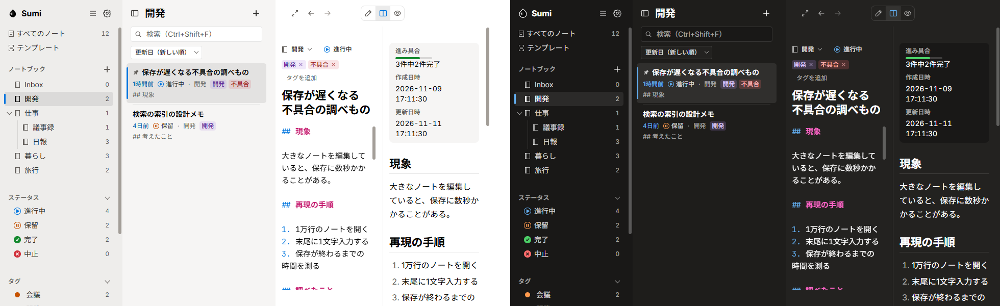

保存も、整理も、もう迷わない。
書いたメモの居場所が、いつも分かる。Sumi Notes は、書いた内容を自動で保存し、自分で選んだフォルダに Markdown 形式のファイル（.md）として残す、Windows のノートアプリです。保存の操作は不要です。ノートはノートブック・ステータス・タグで整理でき、全文検索ですぐに見つけられます。

- Windows 用
- 無料
- Markdown 形式のファイル（.md）で保存
- オフラインで動作
書いたノートは、Markdown 形式のファイルとして手元に残る

-
自分で選んだフォルダに、1ノート1ファイルで保存
ノートは1つずつ、Markdown 形式のファイル（.md）として、自分で選んだ「ノートのフォルダ」に保存されます。ノートブックは、そのフォルダの中のフォルダです。
-
ほかのアプリでも開ける
メモ帳やほかのエディタでも、そのまま開けます。ほかのエディタで加えた変更も、そのまま Sumi Notes の画面に反映されます。
-
アプリを削除しても、ノートは残る
アプリをアンインストールしても、ノートのフォルダとその中のノートは削除されません。
-
アカウントの登録は不要
アカウントの登録やサインインをしなくても、すぐに使い始められます。
-
インターネットに接続しなくても使える
ノートを書く・整理する・探すことは、インターネットに接続していない環境でもできます。
-
ノートの内容を外部に送らない
利用者の情報やノートの内容を、外部に送信しません。利用状況の記録も広告もありません。詳しくはプライバシーポリシーをご覧ください。
書くことに、集中できる

-
等幅のエディタと記法の色分け
エディタは等幅のフォントで、見出し・リスト・コードなどの Markdown の記法を色分けして表示します。リストや引用は、改行すると次の行に続きます。
-
編集画面とプレビューを左右に並べる
書きながら、仕上がりを右のプレビューで確認できます。左右のスクロールは連動します。編集のみ・プレビューのみの表示にも切り替えられます。
-
「/」で書き方を選んで入れる
空の行で「/」を入力すると、見出し・表・タスクリスト・コードブロックなど、18 個の書き方の候補が表示されます。選ぶと、その記法が入ります。
-
文字を選ぶと出るツールバー
文字を選ぶと、見出し・太字・リンク・リストなどの整形のボタンが表示されます。
-
集中モード
サイドバーとノートの一覧を隠して、エディタだけを広く表示します。
-
画像は貼り付けかドロップで添付
画像を貼り付けるか、エディタにドロップすると、ノートのフォルダの中に保存され、ノートに挿入されます。
-
コードブロックの色分けとコピー
コードブロックは言語ごとに色分けされ、右上のボタンでコードをコピーできます。
ノートが増えても、迷わない

-
入れ子にできるノートブック
ノートブックの中にノートブックを作れます。サイドバーでドラッグすると、並べ替えたり、ほかのノートブックの中に入れたりできます。
-
ノートブックごとのページ
ノートブックを開くと、サイドバーがそのノートブックだけのページになり、中のノートブック・ステータス・タグとノートの数が表示されます。
-
ステータス（進行中・保留・完了・中止）
ノートに4つのステータスを付けて、ステータスで絞り込めます。完了と中止にしたノートは、一覧から自動で隠れます。
-
色を付けられるタグ
1つのノートに複数のタグを付けられます。タグには色を付けられ、タグでノートを絞り込めます。
-
よく使うノートはピン留め
ピン留めしたノートは、一覧の先頭に表示されます。
-
ドラッグでノートブックへ移す・ステータスやタグを付ける
ノートの一覧の行をサイドバーへドラッグすると、ノートブックへ移したり、ステータスやタグを付けたり、ゴミ箱へ移したりできます。
書いたものに、すぐたどり着ける

-
日本語も1文字から検索
全文検索は1文字からの部分一致です。全角と半角、大文字と小文字を区別せずに探し、見つかった語を一覧の中で強調して表示します。
-
一致度の高い順に並べる
検索の結果は、一致度の高い順に並べられます。サイドバーで選んでいるノートブックやタグの中だけを探すこともできます。
-
ノートの中の検索と置換
開いているノートの中で、語を検索して置換できます。正規表現にも対応しています。
-
「[[」でノート同士をリンク
「[[」と入力すると、ほかのノートの題名が候補として表示され、リンクを挿入できます。リンク先のノートの名前を変えても、ほかのノートブックへ移しても、リンクは切れません。
-
リンクしているノートの一覧（バックリンク）
リンク先のノートで、どのノートからリンクされているかを一覧で確認できます。
消しても、書き換えても、元に戻せる

-
入力した内容は自動で保存
保存の操作は不要です。入力した内容は、自動でファイルに保存されます。
-
改訂履歴で前の版と比べて戻す
入力が止まるたびに、本文の版が改訂履歴に残ります。前の版との違いを確認して、元に戻せます。
-
削除したノートはゴミ箱から復元
削除したノートはゴミ箱に移ります。戻す先のノートブックを選んで、あとから復元できます。
-
次に起動したときは、前回の画面から再開
アプリを起動し直すと、開いていたノート、カーソルとスクロールの位置、検索の語が元に戻ります。
今日から、すぐに書き始められる

-
テンプレートが 29 個
日報・議事録・旅行の計画・不具合の修正など、29 個のテンプレートを用意しています。Ctrl+T で選んで、ノートを作れます。
-
自分で作ったテンプレートも使える
「Templates」のフォルダにノートを置くと、自分のテンプレートとして使えます。
-
使い方を書いたノートが5つ
ノートが1つも無いフォルダで始めると、使い方を書いたノートが5つ入ります。Markdown の書き方や、使い方の例を確認できます。
-
今ある Markdown 形式のファイルのフォルダも使える
今まで書いてきた Markdown 形式のファイル（.md）のフォルダを、そのままノートのフォルダとして使えます。
キーボードだけで、手早く操作できる
-
よく使うキー
キー 操作 Ctrl+N 新しいノートを作る Ctrl+T テンプレートからノートを作る Ctrl+Shift+F 全文検索（一覧の上の検索欄へ移る） Ctrl+E 編集のみとプレビューのみを切り替える Ctrl+P 左右に並べる（もう一度押すと元に戻る） Ctrl+Shift+D 集中モードに入る・終える Ctrl+\ サイドバーを隠す・出す Alt+←・Alt+→ 前に開いたノートへ戻る・戻る前のノートへ進む Shift+Alt+1〜5 ステータスを「なし」「進行中」「保留」「完了」「中止」にする Ctrl+Shift+P 開いているノートを印刷する M ノートブックへ移動する（ノートの一覧でノートを選んでいるとき） P ピン留めする・外す（ノートの一覧でノートを選んでいるとき） Ctrl+D ノートを複製する（ノートの一覧でノートを選んでいるとき） Delete ゴミ箱へ移動する（ノートの一覧でノートを選んでいるとき） -
すべてのキーは、ヘルプの一覧で
すべてのキーは、アプリのメニューの「ヘルプ」にある「ショートカットの一覧」で確認できます。
書いたノートを、ほかの形でも渡せる

-
HTML（画像を埋め込んだ1つのファイル）
画像を埋め込んだ1つの HTML のファイルに書き出します。そのファイルだけで、ほかの PC のブラウザでも読めます。
-
PDF（A4）
プレビューと同じ見た目で、A4 の PDF に書き出します。
-
Markdown（画像も一緒に）
Markdown 形式のファイル（.md）に書き出し、貼り付けた画像も一緒に書き出します。
-
印刷
Windows の印刷の画面から、ノートを印刷できます。
-
HTML としてコピー
ノートを HTML としてコピーして、ほかのアプリに貼り付けられます。
明るい画面でも、暗い画面でも

-
ライト・ダーク・Windows の設定に合わせる
画面の配色は、ライト・ダーク・Windows の設定に合わせる、の3つから選べます。
-
日本語のフォントを同梱
日本語のフォント（Noto Sans JP）をアプリに同梱しているので、どの PC でも同じ見た目で表示されます。
-
本文の文字の大きさを変えられる
Ctrl++ と Ctrl+- で、エディタとプレビューの本文の文字を大きく・小さくできます。Ctrl+0 で元の大きさに戻ります。
よくある質問
無料ですか？
はい、無料です。広告も表示しません。
アカウントは必要ですか？
いいえ、不要です。アカウントの登録やサインインをせずに使えます。
ノートはどこに保存されますか？
自分で選んだ「ノートのフォルダ」に、Markdown 形式のファイル（.md）として保存されます。配色などの設定、検索の索引、改訂履歴は、その PC の中のアプリ用の領域に保存されます。
ほかのアプリでノートを開けますか？
はい、開けます。ほかのアプリで加えた変更も、Sumi Notes の画面に反映されます。
インターネットに接続しなくても使えますか？
はい、使えます。Sumi Notes がインターネットに接続するのは、ノートに書いた外部の画像を表示するときと、ノートの中のリンクを押してブラウザで開くときだけです。
同期の機能やスマートフォン版はありますか？
同期の機能とスマートフォン版はありません。ノートのフォルダを、OneDrive などの同期サービスのフォルダの中に置くこともできます。そのときのファイルの取り扱いは、その同期サービスの定めに従います。
アプリを削除すると、ノートも消えますか？
消えません。アプリをアンインストールしても、ノートのフォルダとその中のノートは残ります。
どの Windows で使えますか？
Windows 10（バージョン 2004 以降）または Windows 11 の、64 ビット版（x64）で使えます。Mac とスマートフォンでは使えません。
入手の方法
Sumi Notes は、Microsoft Store から無料で入手できます。「Microsoft Store から入手」のボタンを押すと、Microsoft Store の Sumi Notes のページが開きます。Microsoft Store のアプリで「Sumi Notes」と検索しても見つかります。
- 入手先
- Microsoft Store
- 価格
- 無料
- 対応 OS
- Windows 10（バージョン 2004 以降）または Windows 1164 ビット版（x64）
- アカウント
- 登録不要